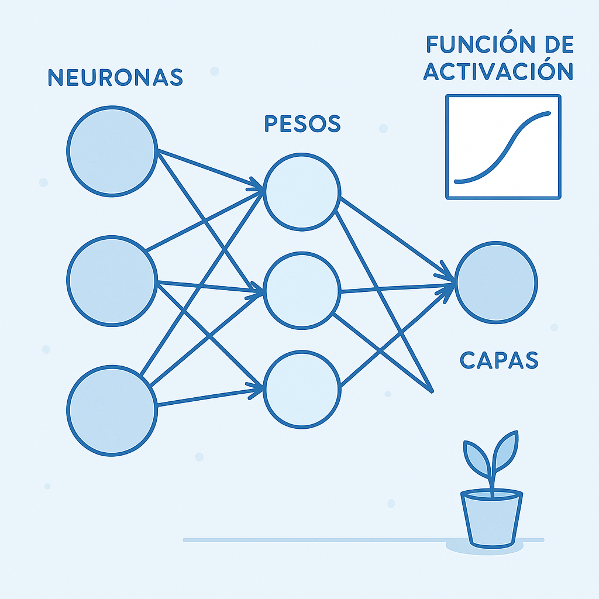

Definición General
Las redes neuronales son un tipo de modelo de inteligencia artificial inspirado en el funcionamiento del cerebro humano. Se utilizan para reconocer patrones, aprender de datos y hacer predicciones o decisiones. Son especialmente útiles en tareas complejas como:
Reconocimiento de imágenes y voz- Traducción automática
- Diagnóstico médico
- Juegos y simulaciones
- Predicción de precios, tendencias, etc.

Componentes Clave
Las redes neuronales están compuestas:
- Neuronas: Unidades básicas que procesan información.
- Capas: Agrupaciones de neuronas; pueden ser de entrada, ocultas o de salida.
- Pesos: Parámetros que ajustan la importancia de las conexiones entre neuronas.
- Función de activación: Determina si una neurona se activa o no.

¿Como Aprenden?
Para una comprensión más visual, puedes ver el siguiente video que explica los componentes de las redes neuronales y como
¿Donde empezar?
Para comenzar a trabajar con redes neuronales, puedes explorar las siguientes herramientas y recursos:
TensorFlow: Una biblioteca de código abierto para el aprendizaje automático.- PyTorch: Otra biblioteca popular para construir y entrenar redes neuronales.
- Kaggle: Una plataforma para practicar y competir en proyectos de ciencia de datos.
- Coursera: Ofrece cursos sobre redes neuronales y aprendizaje profundo.
Estos recursos te ayudarán a familiarizarte con los conceptos y herramientas necesarias para trabajar con redes neuronales.